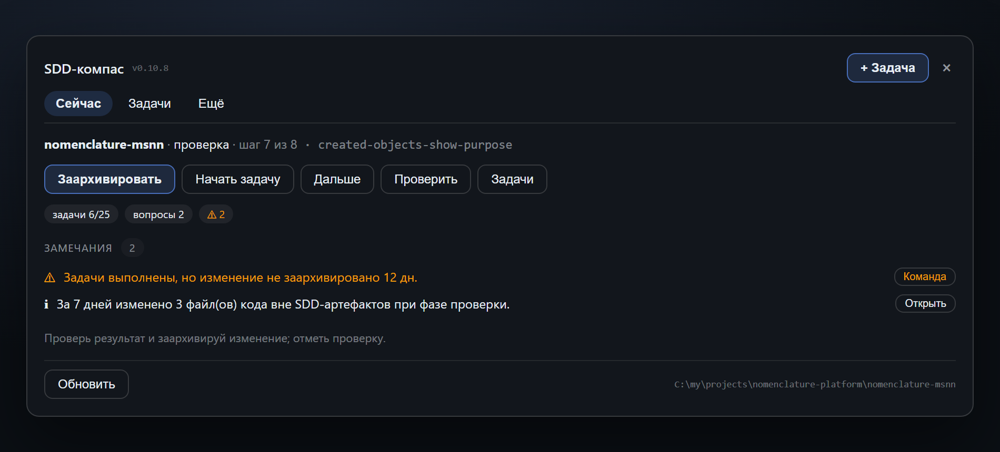
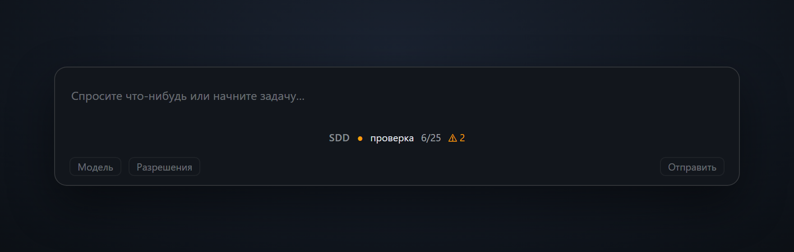

Держит проект в SDD-процессе
Плагин для DeepSeek Harness: показывает фазу активного изменения, следующий шаг, замечания и документы, которые стоит прочитать, — прямо в панели композера. А ещё даёт канбан задач и кнопку, которая заводит новую фичу через grilling.

Что делает
Фаза и следующий шаг
Читает артефакты OpenSpec, Scratch и SSC, вычисляет фазу и подсказывает, что делать дальше.
Канбан задач
Очередь, в работе, проверка, готово. «Начать» переводит задачу в работу и открывает новый чат с ней.
Замечания и дрейф
Код без спеки, устаревшее изменение, незаархивированное, просроченные ревью, дрейф за 7 дней.
Статистика и отчёт
Цикл «спека → архив», доля дошедших до архива, дрейф, покрытие @sdd-аннотациями, недельный дайджест.
Строка под композером

Установка
-
Склонируйте репозиторий
git clone https://github.com/AndrewGanzha/dsh-sdd-compass.git -
Подключите пакет к профилю
В
~/.dsh/profiles/desktop/package.jsonдобавьте бандл и зависимость:{ "dsh": { "profile": { "bundles": ["...", "dsh-sdd-compass"] } }, "dependencies": { "dsh-sdd-compass": "link:C:/path/to/dsh-sdd-compass" } }Или откройте Plugins → Add plugin в DSH и выберите папку плагина.
-
Перезагрузите окно
Host-часть применяется сразу, панель и строка появятся после
Ctrl+R.
Настройка
Необязательный файл .sdd/config.json в проекте создаётся командой /sdd init:
{
"practice": "auto", // auto | openspec | scratch | ssc
"change": "auto", // auto = самый свежий незавершённый
"strictness": "warn", // quiet | info | warn | gate
"staleAfterDays": 14,
"docs": { "roots": ["docs", "openspec/specs"], "maxItems": 5 },
"checks": { "drift": true, "archive": true, "stale": true, "statuses": true, "trace": true },
"trace": { "roots": ["src", "app", "lib", "tests"], "maxFiles": 800 }
}Команды и инструменты
| Что | Как |
|---|---|
| Состояние | /sdd · /sdd next · /sdd check |
| Следующий шаг и архив | /sdd advance · /sdd archive (печатают команду, не выполняют) |
| Документы и статистика | /sdd docs · /sdd stats · /sdd report · /sdd digest |
| Проекты | /sdd projects |
| Инициализация | /sdd init · /sdd refresh |
| Для модели | sdd_status, sdd_check, sdd_projects, sdd_digest, sdd_tasks, sdd_task_move |
CI и отчёты
node scripts/check.js . --ci # exit 1 при warn/error
node scripts/check.js . --ci --fail-on error # только при ошибках
node scripts/check.js . --report # markdown-сводка
node scripts/check.js . --digest 7 # недельный дайджестДайджест можно доставлять по расписанию: создайте задачу в DSH с промптом «вызови sdd_digest и пришли результат».